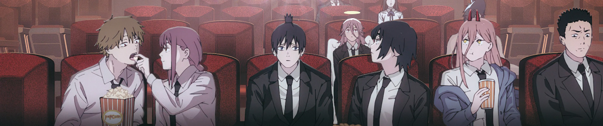

Welcome to Chainsaw Club
Welcome to the world of Chainsaw Man.
A fan page about the characters, story and devils from Chainsaw Man.
Meet the characters
What is Chainsaw Man?
Chainsaw Man is a manga and anime about Denji, a young devil hunter whose life changes after meeting Pochita.
Devils
Devils are creatures connected to human fears.
Action
The series has fights, strange powers and dangerous enemies.
Characters
Denji, Power and Aki all have different personalities.